12/31 (Mon)
-
[phys]ryuon
- Brownian dynamics
- 検証 run - 粒子編。
- mid-dt5e-5-F の 000 の fail している部分を抜き出し。
- これを出発にしても、やぱり fail することを確認。
- ダメな理由がよく分からないのだが…
- ものは minv から FB を構成するところ。
- overlap はなく、行列も対称。でも dpotrf, dgeev ともダメ。
- さて、どう攻めるべきか？
- 1/11/2008: 復活。
- [monton]今日のモントン
- 最近、活動範囲を徐々に広げているのだが、台所で仕事をしているとき、
よく足元で見上げている。落ち着いているときは、そこで終わるのだが、
ちょっと興奮していると、ズボンの裾にガブっと食いついて、離せと言っても聞かず、
こちらとしても仕方なくフェンスを狭くして、「無視」攻撃をするしかなくなる。
人間と同じで、やっぱり怒られるとそのこと自体が気に入らないみたいで、
双方ともストレスの多い時間を過ごすことになる。
- 今日、発見した tips だが、モンちゃんは食いついたときに人間が発する
「オフ」や「ノー」というコマンドを誤解していらっしゃる様子で、
一応引き下る（か、引き離される）が、彼女の中で「噛みつき遊び」は継続中で、
依然、次の攻撃を狙っている。ここで、一旦引き下がったモンちゃんに対して
「待て」（別に習得しているコマンド）と言うと、彼女の中で遊びモードが
（多少）リセットされるらしい。これで「無視攻撃」に至る前に状況回復が可能になった。
- 今日の写真、雪の庭をまだまだかけるの図、その３：
(2007/12/24)
-
大晦日。
- かおが、ここのところ外にでかける機会が多いせいか、
しばらく風邪っぽいと言っていたが、昨夜あたりから本格的に風邪をひいた様子。
- ジャンクな食べ物がないので、近くの safeway に買い物に出ると、すごい人出。
どこの家庭も「あれがない」「これがない」と大変なのだなぁと思う。
- 早めに夕食。先日、
プレゼントにもらった自家製白ワインを開けて乾杯する。
一段落ついたところで、モンちゃんも呼んで（まだカーペットは解禁ではないので、膝の上）、
ダラダラと過ごす。
- 今年を振り返る。一言で言うと、
人生の一つの渡をこしたのかな、という感じ。
個別に感想を述べると、
- ギター
はなかなかうまくならない。
まぁ出発点はほとんどゼロなので、上達したとは言えると思うが。
イメージ・トレーニング、つまり頭の中と physical な部分の連結がなかなか……
などと小難しく言うと大層な事みたいだが、つまりは、鼻歌を楽器ですることがゴールな訳で。
今は alternate picking をイメージ中。
- 日本の職が取れなかった
のは残念だった。でも今回のポストに関しては多分、
本人よりも家の親の方が残念感が強かったみたい。
親孝行という意味でもいい所だったけど、
よりよい適任者が居られたということなのでしょう。
- 今の職が
何とか始動した。
今見返してみたが、本当に長い紆余曲折の末だったな。自分でもよく耐えたと思う。
- 経験的に、適応が遅いので気を引き締めていたが、
何とかうまく立ち上がったのではなかろうか。
自分としては珍しく論文も既に一本
通ったし。
（その後、ちょっと焦点がぼやけているかな？）
- 一軒家を借りて、
犬も飼った。生活面で、ある意味、夢を現実のものにした訳だ。
（若干、家賃が高くて、金銭的に厳しいけれど……）
こんな感じかな。もちろんここに書けないこともあったが（いいことも、わるいことも）、
当然ここには書かない。
- それでは、よいお年を。
12/30 (Sun)
- 今日は朝、雪かきをした（自慢）。
- と言いつつ、実は今シーズン最初（これまでは、家の人がしてくれていた）。
- 頑張って、これまで積もって踏み固められた雪をゴリゴリと剥がして、
路面が見えるまできれいにしておいた。しばらくしたら、うっすらとだが早速、積雪……。
- [monton]今日のモントン
- おねえちゃんが、また午後から約束で出掛けるというので、
午前中に T&T に買い物に行く。気分転換にモンちゃんも一緒に。
- モンちゃんが居るので、まず私が一人で買い物をしてきて、
その後、私がモンを引き継いで、かおが私の買い漏らしたものをメインに
もう一度買い物してくる、という作戦。
- モンちゃんは、おねえちゃんは遊んでくれるのではしゃぐけど、
おにいちゃんは全然遊んでくれないためか大人しく寝に入る。
それはそれでよいのだが、おねえちゃんが戻ってきた時の、
「犬」が変わったようなはしゃぎ方を見ると、何とも複雑な気分。
- 今日の写真、雪の庭をかけるの図、その２：

(2007/12/24)
- [blog]
"Tied Up in Knots"@sciencenews(lc)
- [TV]
Big (1988)
- こどもチャンネルでたまたまやっていたので、懐かしく見る。
しかし tom hanks 若いな。今や見る影もない……
dragnetの
dan aykroyd 並だよな。
12/29 (Sat)
- 休暇に入って、全然仕事ができてない。
- 職場には出ないが、普段どおり仕事をするつもりでいたのだが、
何をしている訳でもないのに、モンちゃん騒動で身心ともに疲れているようで、
まったく仕事ができない。
これではいかん、ということで、コンピュータを２階の書斎に持って上がる。
（モンを見なければいけなかったりで、リビングで仕事をしていた。）
- [monton]今日のモントン
- 夜はお兄ちゃんとお留守番。
随分といい子にしていたんだが、モンちゃん、最後の最後に大目玉を喰らった。
少しして見に行くと、小屋の中でジッとしてた（怒りすぎたかな？）
- 今日の写真、雪の庭を必死にかけるの図、その１：
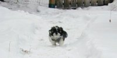
(2007/12/24)
12/28 (Fri)
- [TV]
Bruce Almighty (2003)
- ながら見。いつ jim carrey が犬になるのかなぁと思いながら見てたが、結局、
最後までならなかった。ところで、その映画って何だったっけ？
- [monton]今日のモントン
- 今日の写真、ポートレート・シリーズ（３）甘え中の顔
(2007/12/22)
12/27 (Thu)
- かおが夕食、噂の korean restaurant に友達と出かけた。
- [monton]今日のモントン
- 今日の写真、ポートレート・シリーズ（２）やる気に満ちている顔
(2007/12/22)
12/26 (Wed)
- [monton]今日のモントン
- 朝方６時すぎに目が覚める。ここ二日のアルコール摂取のせいかな、弱くなったもんだ。
ということで、今日は私が朝一番のモンちゃん係。
いつもの人は、休暇になったせいで家庭環境が変化したため
（つまり私が家に一日中いるせいで）、
育仔がうまくいかなくて疲れている様子で、めずらしく寝坊。
- 一通りの朝のイベント（モンの）を終了し、
一人で朝食（私の）も食べ終わって、さて仕事を再開せねばと思った頃、
二階から降りていらっしゃったその人、どうも依然ご機嫌が最高に悪いらしく、
何かとっても大変であったことよ。（最近、愚痴が多いな。）
- 今日の写真、ポートレート・シリーズ（１）ちょっとボケっとした顔
(2007/12/22)
12/25 (Tue)
12/24 (Mon)
- [phys]ryuon
- Brownian dynamics
- shear with PBC
- 実装、その４ - shift の実装を修正：
- 頭の中で気になっていた部分を、この際、きれいにしておく。
- １） shift を reference に対する差の形で定義。
- ２） 各瞬間の shift も結果に記録。
-
友人宅にクリスマス・イブ・ディナーに招待され、友人たちと出かける。
- ディナーがはじまった後、結果として明らかになったことだが、
この集いはまさに、飲兵衛たちの飲兵衛たちによる飲兵衛たちのためのものであった。
私は運転手ということもあり、乾杯だけだったが。（実際にこれだけで十分だった。）
と言うこともあり（家で泣いている子を放ったらかしで）、
本当に久しぶりに午前様を経験した。
- 12/31/2007: 頂いたワインを飲む。
- 1/24/2008:
ワイン詰めパーティ。
-
[monton]今日のモントン
- ということで、
都合８時間、一人ぼっちで留守番させられていたモンちゃん。
とてもよい子にしていた模様で、帰ってみたらトイレに綺麗に３つウンチを並べていた。
しかし、さすがに、かなり寂しかったみたいで、しばらく興奮状態が続いた。
誰かさんは既に飲みすぎで爆睡していたので、結局私が１時間くらいあやして、
落ち着いたところで寝かせて、自分も就寝。
- 今日の写真は、最近お腹が気になる女性（たち）の図：
(12/20/2007)
12/23 (Sun)
-
[monton]今日のモントン
- 食料（モンちゃんの）が切れそうだったので、買い物に出かける。
今日はモンちゃんも連れていく。病院以来
はじめてのドライブだ。しかし、とてもおとなしくしていた
（というか、おねえちゃんの膝の上で完全リラックス）。
- 今日の写真はおトイレ中の写真（実際には単にトイレの上をうろついていただけ）：
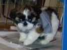
(12/20/2007)
12/22 (Sat)
- [monton]今日のモントン
- 今日は、朝からずっと、驚くほど大人しく穏やかなモンちゃんで、
どこか具合が悪いのではないかと思うほど。
流石に夜、ちょっと盛り上がって来てたが、
やっぱり家に二人居ると嬉しいのか、安心するのか、そんな感じなのだろう。
- 今日の写真は、午前中、人の足の上ですっかり寝入ってしまったモンちゃん。
- [blog]
「出でよ、新しき知識人 「ＫＹ」が突きつける日本的課題」@miyadai(lc)
- 「空気を読め」という言葉の持つ訳の分からない状況について、
今の日本社会という文脈から落っこちた人間にもある程度分かるように書いてあった。
- 以下、その他で目を引いた部分の引用。
- 引用、メディア・リテラシー：
メディアリテラシーとは、これすなわち「文脈への敏感さ」のことです。
言い換えれば、文脈を参照することにで内容を割り引く能力のことです。
当該メディアが置かれた利害布置上のポジションを参照して、割り引く。
当該メディアが果たし得る社会的機能を予測的に参照して、割り引く。
割り引いて、ベタに受け取らないようにするのです。
メディアの流す情報は全て割り引けという概念は、
国境を接したアメリカのテレビのスキャンダリズムや娯楽主義による汚染を危惧する
80年代のカナダの市民運動から生まれました。
日本ではまだ理解されておらず、情報機器を使いこなす能力だと勘違いされています。
- 引用、日本らしさ：
日本の国家ならざる社会を護持しようと思えば、
日本人的な素朴さを克服しなければいけません。
しかし、そのようにして生き残った戦略的な日本人は、日本人と呼べるのか？
そこで出来上がる社会は、日本社会と呼べるのか。江藤淳はこの問題を考え続けました。
「オレオレ詐欺」に田舎のお年寄りが騙される。
アメリカ的発想では無防備さが批判されます。
徹底的に研修して社会の複雑を学ばなくてはならないという処方箋になります。
そうすれば自己防衛能力が高まり、「オレオレ詐欺」に引っかかるお年寄りは確かに減ります。
でもそれでは日本人が日本人の良さを失うことになるかもしれません。
日本社会ならではの匂いを失なってしまうことかもしれない。
そうなると、とりわけ日本に住みたいとか、
日本のために貢献したいという意欲を削いでしまう可能性もある。
- 1/4/2008: tatsuru.
- 1/28/2008:
そう言えば、面接にて。
12/21 (Fri)
- [phys]ryuon
- Brownian dynamics
- shear with PBC
- 実装、その３ - recip 部の table 版：
- とりあえず、 recip 部は no-table 版で組むことにする。
- テストの準備：
- まず、現状のチェック(test-all)が全て通るか確認……したら、 fail している。
check-brownian.c の check_minv_FU() だ。
追い詰めていくと、 FTS の mob が atimes と matrix で違っている。
- check-mob-fts.c で、まずこいつを追う。
ついでに、FTS に限り fluid-rest 版を完備した。
- そうこうしていたら、当の bug を発見。
何のことはない、 non-table 版から paste したコードが古くて、
そいつが間違いを含んでいた。直したら、既存のチェックは全て通るところまで来た。
- テスト：
- simple-cubic を二つ並べた cell では
+L, -L shift は元の configuration と等価でる。
この事実を使ったチェックを check-ewald-shear.c に組む。
- こっちも最初おかしな結果が出てきて、少しはまる。
しかし、実は簡単なポカで、k に対する shift の補正を、
loop の中で += していた（正確には -=）、というもの。
その都度、値を定義することで、チェックはクリアされた。
- [monton]今日のモントン
- 昨日の夜の写真。
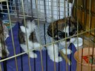
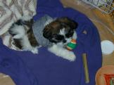
新しいおもちゃを買ってきてもらって、調査研究中。
12/20 (Thu)
- 今日はグループでランチを食べに出かける。
- whyte にあるメキシコ料理の店まで、我々は歩いていく。３０分くらいだったかな。
- ブリトーを頼んだけど、結構、量があって、ちょっと食べ過ぎ。
帰りの３０分がよい腹ごなし。
- office に戻ったら、もう３時半で、４時からのセミナーで今日一日が終わった感じ。
-
[phys]グループ・セミナー。
- 2007年最後のセミナー。セカンド・ラウンドの一発目。
- 前回の話
で予告されていた方向の話。相変わらず専門外で詳細は分からなかった。
みんな腹一杯でトロンとしているかと思ったら、
この辺りが専門の人たちが多いみたいで、結構、活発な議論だった。
- 年明け一発目は日本からのお客さんのセミナーがある、ということで、
私のグループ・セミナーは一週間後ろにずれる。時間があることはよいことだ。
ネタはまだ定まっていない。
- 1/10/2008:
次回のグループ・セミナー（私の番）。
- 11/29/2007:
前回のグループ・セミナー。
-
[monton]今日のモントン
- これはモントンが家に来た日
にお隣さんが撮ってくれた写真。
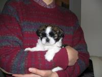
何かお見合い写真のように、すごくお澄まししてるように撮れている。
12/19 (Wed)
- [news]
「Big money for small science」@expressnews(lc)
-
[phys]ryuon
- Brownian dynamics
- shear with PBC
- struct stokes にパラメータの追加。
- 新しいパラメータが設定された場合は、
古いものは上書きされる、という仕様にする。
- 実装：
- Ewald 和の real 部は完了。
- 周期境界の変更も完了。
- 時間発展部への組み込みも完了。
- 残ったのはEwald 和の recip 部。
- 定式化（Ewald 和の recip 部）：
- 最初、自分で一般化してみようと
Poisson summation formula を触ってみるが、挫折。
- 他力本願で、文献を検索してみる。
- Wheeler et al (1997) Mol. Phys. を見つけた。
- これをたたき台（カンニング・ペーパー）として、色々と調べて考えてみると、
一般の次元（１次元じゃなくて）での recip 部の定式化に必要なものは
Parseval's formula らしい
（というのは Nijboer and Wette (1957) Physica による。
ちなみに、これは Beenakker 1986 に引用されている）。
- 実装、その２ - recip 部の修正：
- no-table 版のみ完了。
- table 版は、ちょっと考える必要がある。
-
[monton]今日のモントン
- 今日は一転、大きなおねえちゃんの機嫌がとってもよい。
「モンが満足そう」と自分がとっても満足そう。やれやれ。
- 夕食後（モンちゃんの方）、今日新たに遊び場として開放された台所で
（というのは、カーペットではない床なので）、
新しく覚えたという「持ってきて」を披露してもらう。
まだ咥えたものに対する執着が強くて簡単には渡してくれないけど、
嬉しそうに持って来てはくれる。
- 今後、モンちゃんの写真は小出しにしていこうと思う。
今日の写真は病院から帰って来て、
貰ってきたおもちゃで元気に遊ぶの図。
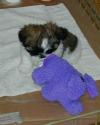
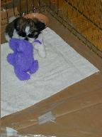
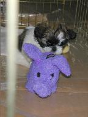
実はこの後、具合が悪くなって、バタバタしたのだが。
- さてクイズです。この貰ってきた象のぬいぐるみの名前はなんでしょうか？
（当たった人には何かあげましょう。まぁ当たる訳ないけど。）
12/18 (Tue)
-
[monton]今日のモントン
- 一夜明けて、
いつもの（ちょっと困った）ハイパー・モンちゃんが戻ってきた。
付き添った人曰く、小屋から出るときも入るときも、嬉しそうにジャンプしているのだそうだ。
やれやれ。
-
[phys]ryuon
- Brownian dynamics
- 検証 run - 粒子編。
- 週末の結果をひとまとめ。やはり、どうしても途中で停止する。
- overlap の処理の検討：
- 今までは、
overlap をチェックし、してたら dt を縮め、それが下限を切ったら
random vector を作り直し、としている。
- これを一般化。
overlap の条件にパラメータ BD-rmin を導入し、条件を緩められるようにする。
- この過程で一つ bug を潰す。
dt が下限を切った時に dt を元の値にもどしてなかった。
（しかし、これでも状況は解決せず。）
- テスト。
- BD-rmin = 0.9 だと計算は進んでいる様子。
- 結果を見ると、しかし、 overlap の度合いは進行している
（いずれ弛めた条件に引っかかることは自明）。
- 大きな問題を見つけた。
- shear と periodic boundary を両立させるとき、
やっぱり無造作にやってはいけない。経験者には自明なことではあるのだが……
- 一度、頭の中だけで、流体の問題に出てくるのは imposed flow に対する速度だけだし、
各瞬間の config に対する解は正しいので OK だ、と流していた。
しかし、時間発展を考えた場合、
imposed flow の関係で image cell は shift していくので、
Lees-Edwards 的な処理を入れないといけない。
ってことは、 Ewald 和に shift の補正を入れないといけないな。
- john の古い論文を見ると、 1984 年のそれに（だけ）書いてあった。
（これらを最初に読んだ時は、 sedimentation だけ考えていて、
shear はスキップしてたからなぁ。）
- 当の Evans (1975) が手に入らないので、色々と最近の文献を物色。
何か一般化できるかな？
- 4/15/2008:
文章化してあった。
-
[phys]お勉強
- 昨日の獲物を印刷しておく。
- Sekimoto (2007) PRE を発見。
そうか、もうあれから 10 年経ってるのか、と愕然とする。
（というのは Sekimoto 1997 のこと。）
[monton]今日のモントン、その２。
- いつものように鼻歌を歌いながら家に着いて、
モンちゃんを膝に乗せて、今日の大変さについての報告（世間で言うところの愚痴という奴）
を呑気に聞いていたら（つまり、馬の耳になんとやら、という奴ですな）、
何かがカチンと来たみたいで、ふと見ると、
大きい方のお嬢さんの目が釣り上がってた（あっ、やべぇ……）。
意見交換（いわゆる、ね）をしていると、
知らないうちに二人の声のボリュームも上がってたみたい。
気が付くとモンちゃんがフクロウのような目をして小屋の前でこっちをジッと見ていた
（途中、モンちゃんは膝の上から下ろしてた）。
- 毎日が決戦みたいに几帳面なおねえちゃんは、
つまり、毎日なにかしらうまくいかなくて、
毎日がストレスが溜まってるのだろう（けれど、俺が全ての原因とか言われてもなぁ……）。
「私が読んだものを全部きちんと読んでよ」と言うので、
おとなしく小学生が宿題をするように頑張って読む。
何々、 over-excited な状態の時や、こちらにとって好ましくない行動を取った時は、
もちろん体罰はよくないが、「ダメ」と言ってもむしろ興奮を煽るので、
無視するのが一番よい、か。よぉし、明日帰ったら試してみよっと
（でも、火に油を注ぐだけのような……）。
- もちろん、しつけの基準が統一されていないことは良くないので、
二人してプロトコルを統一した（興奮が冷めて、気持ちが落ち着いた後に）。
-- "a tired mommy is a good mommy." (s/mommy/puppy/g)
12/17 (Mon)
-
[monton]今日のモントン
- 予定通り、
今日のモントンは、はじめてお医者に連れていかれた。
それでいきなり２本もブスッと刺された（後ろ足に）。
一本目は少し声を出したけど、辛抱強かった。
その興奮も冷めない直ぐ後に、反対の足に２本目がブスっと。
刺された時はまだ辛抱できたみたいだったけど、
抜かれた後、急に痛さが我慢できなくなって、大きな声をしばらく上げていた。
４週後に、まだ刺されなければいけないらしい。可哀想に。
- と、一段落して出勤。雑用を片付けて、いざエンジン始動と思ったら、携帯がなる。
家からで「モントンが吐いて、あと下痢気味で、震えも止まらないので、
病院に連絡したら連れてこいと言われた」
と言うので、家に戻る。バック（というのは、
隣のお兄ちゃんワンコ）のこともあり、
すごく不安になる。病院に連れていくと、ざっと見た限りは、
注射に対する反応ではないみたいなので、多分、虫下しと車酔い、疲れではないか、と。
様子を見るので５時まで預けてくれ、と。
- とりあえず家に戻って、不安気なもう一人の（大きい方の）お嬢様の相手をしつつ、
５時に pick-up に行く。病院では特に嘔吐も下痢もなかった、と言っていた。
しかし帰りの車の中でも全然元気がなく、
車から家に入ろうと動かしたら「キャンキャン」泣いて、
泣かれた人が泣きそうな顔になっている。実際、これまでもモントンは、
怒られた後こっちの言うことを聞かないで黙ってジッと見ていることがあったので、
人間不審になったかな、と不安顔。
いつもの場所に戻してやるが、そこに座ったままジッと動かないので、
すこし抱っこしてやる。
- 抱っこをバトン・タッチして、私は人間用の買出しをして、
職場に立ち寄って置いてきた荷物を取ってきて、家に戻る。
モンはぐっすりというより、ぐったりと寝ていて、こっちが声をかけても反応がなく、
家の人は半泣き状態。
おまけに、私が出かけた後、抱っこしている時に姿勢を変えようと動かしたら、
また「キャンキャン」泣かれたとショックの様子。しばらくして小屋を覗いたら、
顔を上げたので触ってやったらトロンとしているけど普通に反応したので一安心。
人間が腹ごしらえしていたら起きて出てきた。
それで気付いたのだが、右の後ろ足を引いている。２本目の注射をされた方だ。
どうも「キャンキャン」と言ってたのは誰かさんが知らずにそこを触って「痛い」と
言ってただけで、別に抱っこしている人が嫌いになった訳ではなかったみたい
（で、すごく安心して、また泣きそうな顔をしていた）。
食欲も出てきたみたいなので、少しずつあげる（嘔吐が心配なので）。
- 足が痛いみたいで可哀想だが、中身はいつものモンちゃんが戻ってきたので、二人とも一安心。
過保護なおねえちゃんは今夜（だけ）は付き添って寝るそうだ。
- 12/18/2007: モントン、ハイパーに戻る。
- 12/19/2007: 写真。
- 12/23/2007: ドライブ。
- 1/14/2008: 注射、２ー１。
- 1/21/2008: 注射、２ー２。
12/16 (Sun)
-
[monton]今日のモントン
- 普段はヘトヘトな（自称）おねえちゃん（しつこい？）に代わって、
今日もおにいちゃんが全権を預かる。（但し、今日はおねえちゃんは、
おにいちゃんの行動を逐一観察、まぁ授業参観みたいなもんだな。）
- エキサイトしてくると、結構やんちゃになってきて、手に負えなくなるみたい。
私とかおのアプローチは結構違うみたいで、簡単に言うと私が easy-going で、
かおは緻密で critical. 私は怒るような situation は出きるだけ避けるようにし、
仮に間違いをしても、ひどくない場合はスルーするけど、かおの方は、そういう situation を
あえて避けたりはせず、怒る時は徹底的に怒る。このお陰で既にモンちゃんは、
やったら怒られることは頭に入っているみたい（だけど、ついつい体が反応してしまう様子）。
なので、私のアプローチも使える。
- 今日のモンちゃんは、朝一番でちょっとエキサイトし過ぎて、
おねえちゃんの胸から床に落ちて「キャン」と叫んでおにいちゃんを起こし、
お昼には家の前の歩道の雪かきを元気よく監督した（途中で足が冷たくなるまで）。
- さて、明日はお注射の日。
何も知らない姫は今、スヤスヤと寝ている。
-
[FreeBSD]
WaoN in FreeBSD's ports is updated to version 0.9.
12/15 (Sat)
-
[monton]今日のモントン
- 今日は（自称）おねえちゃんがお出掛けなので、おにいちゃんが全権を預かる。
結構、お互いにハッピーで、穏やかに過ごしたような気がする。
- モンは、ちょっと注意力散漫かな？好奇心が旺盛なのと、怒られたら現実逃避しがちなのが
混ざってる感じ。知能は格段に高くなってきている。
- 写真は獲物を求めてさまよう、の図。
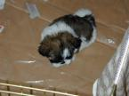
- 5/3/2008:
またお呼ばれ。今回はモンちゃんはお留守番。
12/14 (Fri)
- [blog]
「MORI LOG ACADEMY: なんとなく節目かも」@matz(lc)
- 時々ドキッとすることがある。
今回はまつもとさんの日記。何で森博嗣がネタになるんだろう、と。
数少ない回覧ブログの間に
ふっと相関関係が現れると、世界は狭いなぁと思う。
-
- 引用：
小説家とプログラマは、元手がほとんど要らない点や、
ひとつの世界をゼロから創り出すという点でよく類似しているような扱いを受けるし、
私も類似点はあるのだろうなと思う。
- 商売相手（顧客というか audience というか）が決定的に違うし、
それに商売手段としての確立度が天と地くらいあると思う。
ロック・スタァとクラシック奏者くらいかな（適当だけど）。
「研究者」は、その意味では小説家からプログラマー方向に
（富豪から貧乏方向に）極限をとったようなものかな、ジャズ・ミュージシャン程度か
（audience の広さについても）。
森博嗣が引退と言っているのは、もう稼ぐ必要がなくなった、
というだけのことなんだろうな（と書くと、本当に貧乏人のひがみに見えるな。
もちろん、別にひがんでる訳ではない）。
-
[monton]今日のモントン。
- 今日で満８週間になった
（と言うことは、２００７年１０月１９日生まれと言うことだ）。
- ご要望にお答えして、ちょっと photo gallary:
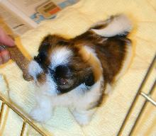
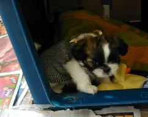
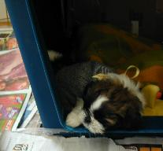
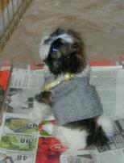
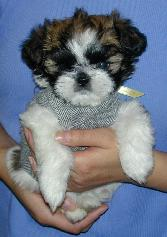
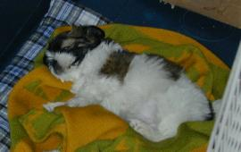
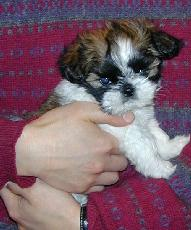
何だか
MORI LOG ACADEMY か、最近のスタパブログかって感じだな。
- 最近、一人で雪道を細心の注意を払って家に向かう車の中で、
最高に集中しているせいか、気が付くと変なことを口走っている自分に呆れている。
モンちゃんはね、モントンっていうんだ、ホントはね。
だけどチッチャいから、自分のことモンちゃんって言うんだよ。
かわいいね、モンちゃん。
って、言えねぇよ
とか言いながら……。
- blosxom に monton category も作ったので、
モンちゃんだけ見たい人は、
ドーゾ。
-
[phys]ryuon
- Brownian dynamics
- semi-implicit predictor-corrector スキームの実装、続き。
- libstokes/test にチェックを追加。
細かい修正の後、全てパス。
- non-Brownian ３体落下で、同じようにテストする。
期待通り２次スキーム並であることが確認出来た。
- 4/15/2008: 再確認。
- 検証 run - 粒子編。
- 昨日の結果をまとめる。
- 新しい siPC scheme も追加。
- 結果を解析。
- 前に書いていた ana-diff.py は
bug だらけ、ダメダメであった。
- debug 後、
mean-square displacementは、それらしい結果を出すようになった。
- これ以上のことは、統計平均をとった後で。
- ARPACK/LAPACK 問題。
- 昨日発見した patch が、
例の
ARPACK/LAPACK 問題に効くどうか確認。
- まずは問題の再現、と思って check routine の呼び出し順序を変えてみたが、
問題なく動いている……よく分からないが、問題がないのなら検証のしようもないな。
12/13 (Thu)
-
[phys]ryuon
- Brownian dynamics
- 検証 run - 粒子編。
- 昨日の結果を眺める。
- rej 版でも見てみる。やはり dt をかなり小さくしないとダメだな。
- JGdP の場合も、dt が大きいとFBの計算でこける。
- semi-implicit predictor-corrector スキームを自分なりに実装。
- Jendrejack et al は１次スキーム。
mid-point や Ball-Melrose 並の semi-implicit を組もう、ということ。
- Somasi et al や Hsieh et al のような、非線形方程式解法のトリックは
今のところ、なしで。
- [phys]お勉強
- 昨日の収穫物をまとめておく（だけ、まとめておく）。
- 一本 slip の実験の論文に目を通す。
alex が興味を持ちそうなのでメールしておく。
- その後 alex が来て、ついでに質問を聞くが、
その場ではよく分からなかった（shear viscosity と bulk viscosity の関係）。
後で色々と考えるに、彼が後者だと言っていたものは前者からの寄与で、
つまり彼の計算において彼が期待したような手抜きはやっぱり出来ないよ、
という結論だな。
-
[phys]ARPACK problem
- In a few days, I was stuck in some problem on ARPACK.
Some check in libstokes using ARPACK failed on openSUSE
(although the same code is just fine on FreeBSD and SUSE-Linux).
- By comparing the behaviors between openSUSE and FreeBSD step-by-step,
it is found that the problem is coming from "dlarnv",
the random number generator in LAPACK, which returns
"nan" in some element.
- At first I suspect some memory-leakage in my side, but it looks fine.
Then, I googled and found the site
"ARPACK/LAPACK Symbol Duplication"@tiker(lc).
After applying the patch for SECOND,
all checks are fine on openSUSE. Thanks for the pactch.
Hopefully, this posting will save somebody some trouble.
That's true.
- Now I guess that some trouble
of ARPACK on FreeBSD before
is also related to this.
- 12/14/2007: the problem is just gone (?)
12/12 (Wed)
- 今日は比較的暖かい。
- 最高気温がプラス１度で、道路の雪も路面からはほとんど消えた。
空は曇りで、風が強い。
-
携帯のお金を払っておく。
- ３ヵ月に１度の儀式だな。
今回は \$9 程度余った（ということは \$15 使った、ということか）。
- 9/15/2007:
前回の top up.
- 3/11/2008:
残高は keep される？
-
[phys]ryuon
- Brownian dynamics
- 時間発展スキームのチェック
- implicit のチェック、続き（２）：
- quaternion の処理の確認。
quaternion が nan になっている。
- 追っていくと、 check code の初期化がまずかった
（全部０にしていた）。最後の要素だけ１にする。
- これで12/7/2007に始めたチェックは全部解決。
- bue9 に新しいのを持っていったら libstokes/test/test-all でエラーが出た。
- 地道に追っていくと、 brownian.c で配列のアクセスが範囲を越えていて、
memory を開放時にエラーになっていた。
- 同様の bug が他の部分にも一つあったので、修正。
- 別の環境で走らせたお陰で、見つかりにくい bug が見つかったわけだ。よかった。
- 応用問題（DIP）に戻ろう。
- 検証 run - 粒子編。
- stokes/src/xi3 の update
- polydisperse 系と slip 系に対応。
-
[phys]nanoプロジェクト
-
[phys]
"Editorial: Which Wei Wang?"
- おもしろい。こういう柔軟さは、さすがだな。
（Knuth の本の索引を思い出す。）
- 日本国内のジャーナルが、 local language という文脈ではなく、
こういう路線を率先して進めるということがあったら、おもしろかったのにな。
（APS のこの試験的な動きが確立した後なら、それこそ率先して追随するのだろうが。）
- というか、確かに中国人、台湾人の名前は、
アルファベットでは全く区別が付かないよな。
- 1/17/2008:
オンライン・ジャーナル考。
12/11 (Tue)
- [phys]お勉強
- セミナー
- "Functional nanomaterials:
from material design to diagnostic applications"
(Teodor Veres, NRC-IMI)
- NRC の別の研究所の、ナノ関係のグループ・リーダーなのかな。
一通り、 big picture を話した、という感じ。
- 出自は磁気系で、 micro-, nanofluidics の control に磁気を使おう、
というのが一番底の種みたい。しかし、広い collaboration で、
ナノ・テクの上の層を全部まとめ上げているのは、企画力があるというのかな。
- しかしこの top layer は、結局、誰が考えても似たものになる気がした。
理由は、マーケット（お客）などの外的な境界条件が決定要因として大きいからだろうけれど。
ってことは、リーダーってのは単に「私がリスクを取ってやる」と言った人という程度の
意味しか、実質的にはないのかもしれない
（とまで言うと、明らかに「過小評価」の「し過ぎ」だけど）。
- そういう、磁気屋が進めた大きな（応用の）話を聞きながら、
流体屋が貢献しうる本質的なポイントは何だろうかと考える
（まぁ、考えてどうなるものではないけれど、考える）。
-
[phys]ryuon
- Brownian dynamics
- 時間発展スキームのチェック
- implicit のチェック、続き：
- libstokes/test に check-bd-imp.c を書く。
- まず evolver のチェック。
- この際、汚い処方を改めて、綺麗に書く（データ構造とメモリ管理の話）。
- explicit の evolver と比較を行ったら、
それなりに正しい結果を出したので、動いているみたい。
- 次に top level でのチェック。
こっちも、 FTS まで lub 込みでも期待通りの挙動。
- ただし、 quaternion を入れるとダメになる。
- 何となく前に味わったもの
（11/2/2007）
の感じがするけれど、問題を発見できず。
- WORK/src/RYUON/BD/stokes3-test.c に戻る。
- 12/7/2007には
明らかに挙動のおかしかった JGdP が、まともになった。
期待通り、 BB と同程度の１次スキーム。
12/10 (Mon)
-
[phys]ryuon
- Brownian dynamics
- 時間発展スキームのチェック
- implicit のチェック：
- ノートにきちんと明らさまに書いておく。
- 一瞬、間違いを見つけたと思ったが、よく見ると実は正しかった。
- その際の修正で core dump するようになって、そこからの復旧に一日潰す。
- [phys]お勉強
- 最近の文献から、また幾つか印刷はしておく（こういうのは、一期一会だから）。
- セミナー
- "Imaging using photonic bandgaps, a novel endoscope,
and terracing/fingering phenomena in nano and small scale droplets"
(Richard Craster, Imperial College, London)
- 数学屋さん。音響をやってたそうで、 photonics は技術的な応用。
- fingering の方は、 surfactant の効果に（だけ）注目した話。
流体と surfactant のダイナミクスを couple させたものの線形安定性と、数値解析。
12/9 (Sun)
-
[monton]今日のモントン。
- 家にやって来てちょうど一週間になった
（ってことは７週目ということだ）。
一番の懸念である「トイレ」のしつけは、なかなか思うようにはいかない
（と言っても、失敗率は半分以下だけど）。
これは、半分は奴の知能レベルがもう少し上がるのを待つ必要があるのだろう。
実際、体の動かし方とか、日々、習得している様が見られるし。
- コミュニケーションが鍵でありネックでもある
（大体、あっちは赤ん坊だし、こっちの言うことが分かる訳がない）。
良い事については遊べば伝わるけれど、ダメなことを伝えるのが、その中でも一番難しい
（言葉が通じる人間に対しても、
十分に難しい）。
二人して色々と web で情報を survey し、ポイントは掴んだかな。
人間の指の甘噛みはダメということは、少なくとも伝わったようだ。
- 他に情報収集で分かったことだが、どうもシーズーは頑固らしく、しつけも大変らしい。
モントン自身、気が大きくて、唯我独尊なところがあるので、こりゃ大変だ。
まぁ、褒めてもらうのが大好きなので、よい所を伸ばす方向で
（……しかし「褒めてもらう」＝「だっこしてもらう」になりつつあるので、注意しつつ）。
- サマリー：教育について。
12/8 (Sat)
-
[news]
「1歳の誕生日にあいさつするクヌート君」@yahoo(lc)
- [blog][music]
THE "Letter From Evans"
by Win Hinkle
is now on-line.
-
[phys]ryuon
- openSUSE 環境 (i1200) に RYUON を入れる。
- blas, lapack は package を入れているみたいだが、
link でこけるので、 libblas.so と liblapack.so を ln -s しておく。
- arpack は bue9(SUSE-Linux)
同様、自分で compile 。
etime_ がないと怒られたので、 "EXTERNAL ETIME"
をコメント・アウトした。
- libiter:
gmres の malloc に一つ bug を発見。
compile, test とも問題なし。
- libstokes:
compile は、 slip 関数の一部の optimize level を下げて終了。
しかし test ではまる。
どうも arpack がうまく動いていない様子。
- stokes 用に vtk も手で入れておく。
12/7 (Fri)
-
[phys]ryuon
- RYUON のここ数ヶ月間の進捗状況をまとめておく。
- Brownian dynamics
- 時間発展スキームのチェック
- explicit のチェック：
- 既存の schemes を Pe=∞ 対応にして、
non Brownian との比較を行う。
- どれも期待通りの振る舞いをしていることを確認。
- implicit にも同様の修正を施し、比較。
こっちは、何かが変だ。
- 12/12/2007:
（non-Brownianでの）時間発展チェック、終了。
- 家の人が知り合いに招待されていて、その送り迎え、およびベビー・シッターとして、
ちょっと早引け。
- 私も招待されていたらしいのだが、昨日のバタバタもあり、今日はパスさせてもらった。
12/6 (Thu)
- バタバタとした一日。
- 朝の10時過ぎに職場に着いた。
今日から大学ではじまるクラフト・セールで駐車場が混雑するという
警告メールが昨日来ていたので、無事に回避できたとほっとしていたら、家から電話。
furnace が壊れたみたい、と。
- 大学に荷物を置いたままで、一旦、家に戻る。確かにおかしい。
掃除機でホコリを取ったり、素人でも出来ることはしたがダメなので、
大家に連絡をとって修理を依頼。知り合いのハンディ・マンがすぐに来てくれたが、
原因不明。業者は（最近、寒くなったせいで）とても忙しいらしく、捕まらなくて困り果てる。
その後バタバタした結果、夜８時に専門家が来てくれて、
何とか無事に直ったのは夜の９時過ぎ。
- メインの blower が回らない問題は、モーターの付け替えで
（ハンディ・マンの人が直してくれて）、
すぐに火が消える問題は、専門家の調査の結果、原因は温度の下げすぎで結露した水が
圧力計のパイプに詰まったためだった。温度を１７度以下に設定してはダメらしい。
- 職場に戻って荷物だけをピックアップして、家に着いたら１０時過ぎ。今日は終了。
- 結果として、私にとって今日は一日中モントンと過ごした最初の日になった。
しつけ係の人曰く「今日ははしゃいでいた」と。（修理の人とかも出入りしてたし。）
- [phys]nanoプロジェクト
- furnace 故障のため、修理に立ち会うため、（寒い）自宅に缶詰になる。
- ちょうど良い機会なので、書斎に積んである論文の山を整理する。
- 一般的な興味の論文と、今集中しているネタに分けて、
今のネタを更に二つに分類した。
- 読みたいと思っていて、しかしどこに行ったか分からなくなったものも出てきた。
12/5 (Wed)
- [phys]ryuon
- Brownian dynamics
- chain と固定粒子の問題、続き。
- FBのlub部の warning の件。
Hookean と WLC での比較で攻める（Hookean は問題なく、 WLC だとおかしい）。
- 追っていくと、見つけた。 bonds の nex が正しく渡っていない。
scm_num2int の引き数を間違っていた。
- あとコードを見ていて、別の問題を見つけた。
lub 込みでも mob の lub がない状況が起こりうる。
BD->flag_lub の設定に修正を入れる。
- 再チェック、まだおかしい。
- warning は出なくなった（当たり前）が、固定粒子が効かなくなった。
- 調べたら原因は簡単で、 solve_mix_3all() にも上で修正した
flag_lub を渡していた。
- 修正は、 BD_params に flag_lub_B を追加して、
そこに mob-lub 用の flag_lub を設定、
元の BD->flag_lub は top-level の flag_lub をそのまま定義することにする。
- 時間発展スキーム（確率微分方程式の積分スキーム）のチェックについて、
少し知恵を絞る。
- 自分のコードが正しく動いている自信が、まだないので。
12/4 (Tue)
- [phys]お勉強
- 最近の文献から、気になったものを印刷しておく。（全然、消化できてない……）
- [phys]ryuon
- Brownian dynamics
- lub 抜き option の続き。
- 実際の計算レベルに実装。
- self の扱いでちょっと悩む。
結局、泥縄的に処理（概念的にクリアな選択ではない、の意
--こういう所が後で足を引っぱるのだろうが……）。
- Brownian dynamics 自体で、固定粒子の処理がおかしい。
- 例の lub 抜きをしても、挙動が変わらず、色々調べてたら、どうもそのようだ。
- うまく行く地点にまで戻って、そこから一つ一つ詰めていって、無事に見つけた。
sys->pos の設定で mobile と fixed をきちんと分離していなかった。お粗末。
- ついでに、この辺りの処理を簡潔化しておく。
（このレベルになると、こういうチマチマした改善は、実の所 performance には
ほとんど影響を与えないのだが、 code が clear になることは良いことだ。）
-
[phys]セミナー担当者から、年明けにセミナーをやってくれないか、と頼まれる。
- セカンド・ラウンドに入る、ということらしい。
しかし、あっという間に半年経った
わけだな……やばい、気を引き締めなければ。
- 内容は論文の話をしてもいいのだが、絶対に audience は引くので、
今月の応用計算の結果を見てから決めよう。
- [monton]今日のモントン。
- というか「今日のモントンしつけ係」。
トイレの躾のため、今のところ２４時間体制で付きっきりなので、かなりグロッキー状態。
しかも、これまで結構うまく行っていたモントンが、
今日はちょっと粗相をしたらしく、がっくり来ている模様（しつけ係の人が）。
12/3 (Mon)
-
雪が少し積もっていた。
- 車が滑って怖かった。一旦止まると、発進が怪しいし、
やっぱりタイヤを買わないとダメだ。ついでにブロック・ヒーターも。
- 1/28/2008: ー３０°Ｃ
- 10/4/2008:
やっとタイヤを買った。ついでにヒーターも入れた。
-
[phys]nanoプロジェクト
- DIP:
- 先週仕込んだ計算は無事終了。
が、固定粒子が機能していない。
- ということで、 lub を on にしてみる。
- 何やら warning が出てくるな（FBの計算で）。
- しばらく config が落ち着いたら出なくなった。
- が、挙動がおかしい……
chain 間の lub を切る option を付けた方がいいかな？
（RYUON で。）
- 12/12/2007: 復活。
-
[phys]ryuon
- Brownian dynamics
- chain 内の lub を抜けるような option を導入。
- Nano の simulation で
lub 込みだと何かおかしいので。
- しばらく知恵を絞る。
Nex というパラメータを導入し、
同一 chain 内の隣接 Nex 個は（lubを）考慮しないようにしよう
（MD の LJ と似たような方法だ）。
Nex に負値を与えると、同一 chain の粒子間は全部落とすことにする。
- どのレベルに Nex を付けるか悩む。
一番、汎用性が高いように、各 chain 毎に与えることにする。
（設定ファイルは、そんなに触るものでもないし。）
- core 部分は実装済み。結構、きれいに組めたかな
（みんななら bond の情報からどうやって排除リストを作るかな？）。
- チェック code を書く。チェック済み。
-
裁判所から陪審員の召喚状が来ていた。
- カナダ市民（というのか、国民というのか、
そうそう先日の citizen）じゃないので、
不適格なのだと思う（多分）。フォームを記入して５日以内に返送せよ、とあるので、
しかるべく。
- アメリカでも一回来てたな、そういえば。あれって baltimore だったっけ？
12/2 (Sun)
-
[monton]とうとう我が家の構成が２から３（まだ２＋0.5くらいかな？）になった。
- ここ数年間、引っ越す度に「犬」「犬」「犬」「犬」と言って来た訳だで
（例えば、12/17/2003、
3/4/2007）、
思えば本当に長い道のりだった。
- 昨日もアニマル・シェルターに寄って、
その後ペットショップでやってた adoption fair みたいなのに２軒まわった。
ピンと来るものがなかったので「焦ることはない」と言って引き上げたところだった。
今日、家の人（犬を欲しがっている張本人）が web に個人が出してた仔犬の広告を見つけて、
まず見に行ってみよう、と行って来た。昨日は（adoptionということで）成犬ばかりだったが、
仔犬を見たら一気にグラっと来てしまった模様で、ほとんど即決。
（ちなみに昨日は、本当に決断力のないヘタレだなぁ、と笑っていた。）
昨日のような、引き取り手がなくて困っているワンコを飼う方がより「正義」なのだろうが、
やはり今後１０年以上は commit する関係であり、何かを感じたらそれが優先。
-
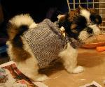
まだ６週間で手乗り状態、
これから医者に行ったり、こちらで全部一通り済ませなければならない。
まぁ両方の隣人も犬を飼っているので、心強い。（実際、しっかり目撃されて、
さっそく古い犬小屋をくれた。）
- 名前はここに来た時から決めていた「モントン」。男の子を想定してたので、
頭の中でまだ馴染まないが、やっぱりこれでいこうということに。
ちなみに犬種はシーズー、今回の首謀者の希望通り（私は個人的には、もう一回り大きい、
鼻のつぶれてない、隣のキラちゃん
みたいなのが好みなのだが……まぁ犬の好みなんて、
所詮その人の過去のワンコに他ならない訳だが）。
この女の子の「モントン」は比較的落ち着いた性格の子で、
今も既に一人で寝ている。しつけはこれから（と、張り切っていらっしゃる人が居る）。
私は spoil 要員を決め込もう。
- 12/9/2007: １週間。
- 12/20/2007: 写真。
- 12/31/2007:
2007年を振り返って。
- 1/2/2008: １ヵ月。
12/1 (Sat)
- [phys]ryuon
- libiter/test
- preconditioned 版のテストを WORK/src/RYUON/stokes-test から移動。
- ついでに、こっちも全部 compare_max 化しておく。
-
久しぶりに、のんびりとテレビを見ていたら「市民ケーン」をやっていた。
- 見たことはあったけど、いつも通りすっかり忘れていた。
もうちょっと感動した気がしたが、こんな話だったっけ？
（ちょうど２時間、カットとかされてたのかな？）
- 12/3/2007: citizen.

 2007年12月
2007年12月{kind=link}
{kind=link}
{kind=link}
{kind=link}
{kind=link}
{kind=link}
{kind=link}
{kind=link}
{kind=link}
{kind=link}
{kind=link}
{kind=link}
{kind=link}
{kind=link}
{kind=link}
{kind=link}
{kind=link}
{kind=link}
{kind=link}
{kind=link}
{kind=link}
{kind=link}
{kind=link}
{kind=link}
{kind=link}
{kind=link}
{kind=link}
{kind=link}
{kind=link}
{kind=link}
{kind=link}
{kind=link}